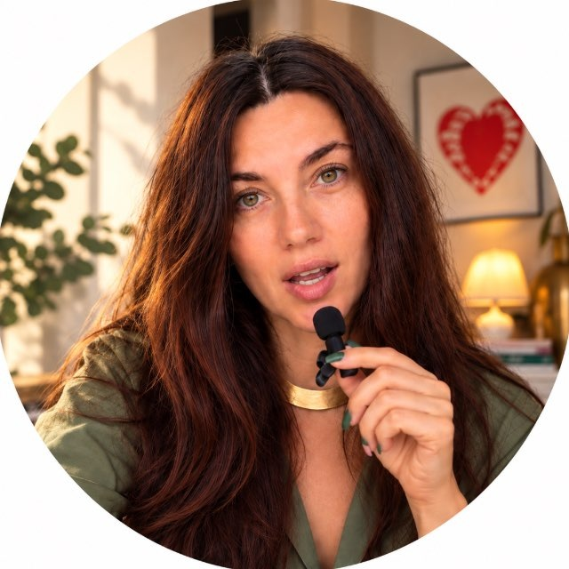

НЕ МОЁМОЁ

Автор СтудииИрина ВединееваУ вас есть сохранённая карусельФотографии, текст и оформление в этом браузере
ШАГ 1 · ВАШ МАТЕРИАЛ
Соберите свою карусель
Выберите до 10 фото или начните без них, затем вставьте текст. Карточки, шрифты и цвета можно будет изменить.
Черновик остаётся в браузере, где вы начали. Открыли в Телеграме? В Сафари переходите до загрузки фото.
1. ФотографииНеобязательно · до 10 фото
0 / 10Фото и цветные слайды можно смешивать. Если фото не хватит, остальные карточки будут с фоном.
Можно вставить текст целиком — сайт предложит техническую разбивку, не редактуру с помощью ИИ. Вы сможете править её и сам текст на карточках.
Если текст уже подготовлен
Включите опцию выше. Между карточками поставьте отдельную строку из трёх дефисов: --- . Первая строка — заголовок, следующие — пояснение. Обычный Enter сохраняет перенос. Если разделителей нет, каждая пустая строка начинает новую карточку. Длинные карточки не дробим автоматически: вместимость проверим в выбранном стиле.
Собрала эту Студию, потому что сама делаю карусели. Ваш текст. Ваши фото. Ваш стиль.
Ваш стиль — для следующих каруселей
Загрузите файл стиля или сохраните оформление в редакторе. Фото и тексты в него не входят.
Шаг 2
Проверьте разбивку
Количество частей станет количеством карточек. Точки в конце визуальных заголовков мы скроем, исходный текст сохраним.
Ваши фотографииНажмите, чтобы выбрать обложку
Система не переписывает ваши слова. Карточки можно разделить, объединить, удалить или переставить.
Структура карусели0 карточек
Плотность нормальнаяПалитра: Выберите сочетание или загрузите скриншот палитры
1 из 28
Выберите шрифтовой стиль
Влево — не моё, вправо — моё. После первого «Моё» можно идти дальше.
Выбрано стилей0
Шаг 4
Выберите один стиль
Ваша обложка с выбранными парами. Фон, цвета и расположение текста сохранены.
Локальный черновик